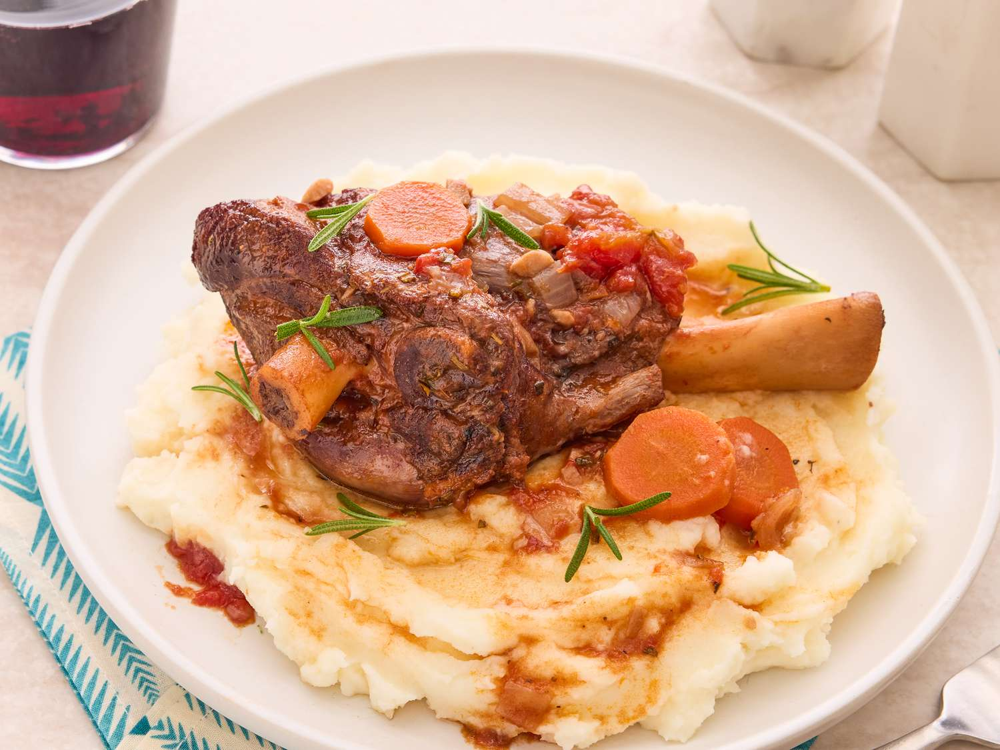

Lamb Shanks

Description
Lamb shanks braised in red wine with fresh rosemary, garlic, and tomatoes.
Excellent served with polenta or roasted garlic mashed potatoes
Ingredients
- Lamb shanks:This recipe makes six lamb shanks. If you have more or less, you’ll need to adjust the recipe.
- Seasonings:Lamb shanks are seasoned with salt, pepper, fresh garlic, fresh rosemary, and fresh thyme.
- Olive oil:Cook the lamb shanks in olive oil until they are brown on all sides before you cook them.
- Vegetables:You’ll need onions, carrots, and canned whole peeled tomatoes.
- Red wine:You don’t need to use your most expensive bottle.
- Broth:Use store-bought or homemade beef broth and chicken broth.
Steps
- Cook the lamb shanks in oil until they are brown on all sides.
- Add carrots, onions, and garlic to the pot and sauté. Stir in the remaining ingredients.
- Return the shanks to the pot, bring to a boil, cover, and simmer until the meat is tender.
- Uncover the pot and simmer for about 20 minutes, then remove the shanks.
- Boil the sauce until thick, then spoon it over the lamb shanks to serve.